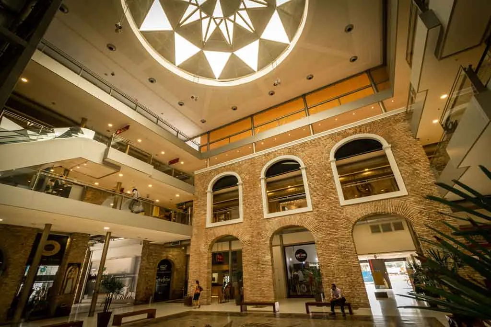
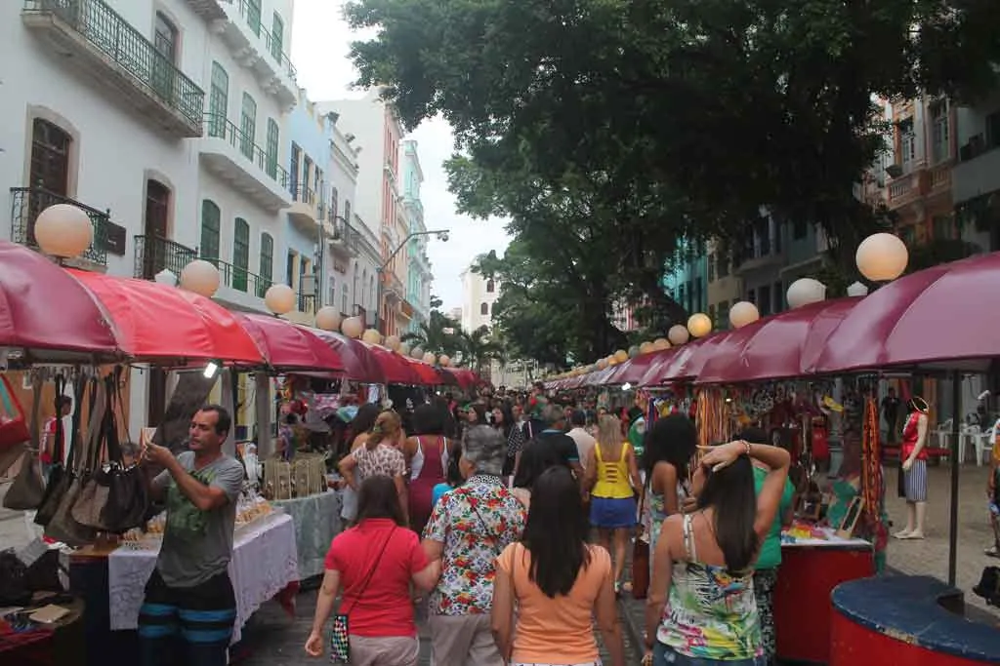
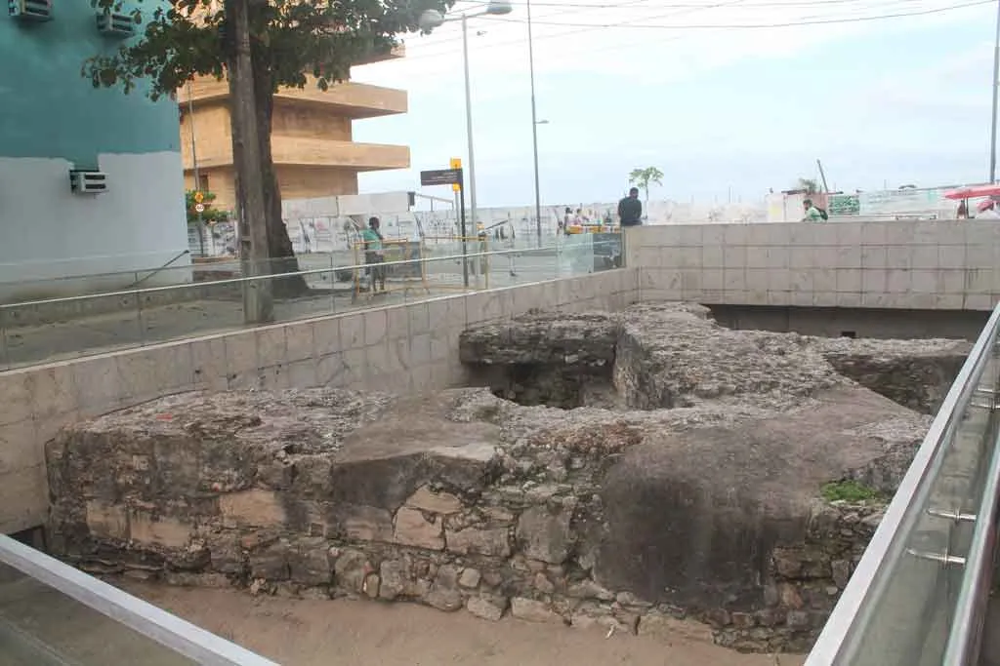

Pontos turisticos na parte antiga de Recife
Um pauco da Histório
O bairro do Recife Antigo respira história e abriga as principais atrações
da capital de Pernambuco. Uma história que teve grande influência de
Portugal, dominação dos holandeses e ainda retrata a cultura francesa,
inglesa e muito mais! Você já pode ver que entre tantas nacionalidades que
passaram no Recife, a história não é pouca. Tudo isso é revelado num
passeio pelo Recife Antigo que pode ser feito em um dia, como mostramos
neste post. Por isso, apresentamos um roteiro que inclui religião,
cultura, música, festa e claro muita história!
Paço Alfândega

Iniciando nosso roteiro no Recife Antigo, o Paço Alfândega é a nossa
primeira parada. Você pode alugar um carro no Recife, seja no aeroporto
ou em outro ponto e estacionar por lá. Também é por isso que iniciamos o
roteiro por aqui, porque você vai poder deixar o carro em segurança. O
local já foi um convento e a alfândega do Recife, mas hoje em dia,
depois de ser reformado e revitalizado, se tornou um pequeno shopping.
Mas não pense que é um shopping qualquer, porque lá você vai ver uma
estrutura sem igual com áreas originais reveladas, peças do ceramista
Francisco Brennand e um terraço com vista panorâmica do Rio Capibaribe.
Rua do Bom Jesus

A Rua do Bom Jesus foi considerada uma das ruas mais bonitas do mundo.
Além disso, ela é uma das ruas mais antigas do Recife. Por lá você vai
encontrar alguns dos prédios mais importantes, portanto descubra a
história do Recife Antigo a fundo. Aos domingos, a Rua do Bom Jesus
ganha uma feirinha típica com artesanato local, barraquinhas de comida,
artesanato e música aos fins de tarde. A feirinha é bem familiar, as
crianças aproveitam para brincar e os pais vão às compras ou relaxam num
bar ou restaurante. Além disso, dá para fazer um lanche e experimentar
algumas das comidas típicas de Pernambuco que são deliciosas. Vá até o
Centro Cultural Judaico, que é a Sinagoga Kahal Zur Israel. A primeira
sinagoga das américas é um dos pontos mais importantes da cidade. O
local funciona como um museu onde é possível ver escavações
arqueológicas, peças que foram encontradas no local e o micvê, uma
banheira usada para rituais de purificação dos judeus. A entrada custa
R$10, porém estudantes pagam metade do valor. Seguindo pela Rua do Bom
Jesus, você poderá visitar a Embaixada de Pernambuco Bonecos Gigantes de
Olinda. No local há uma exposição dos bonecos gigantes usados durante o
carnaval de Recife e Olinda. Lá também é possível conhecer mais sobre o
carnaval e aprender um paços de frevo. A entrada custa R$15 por pessoa,
mas crianças até 12 anos não pagam. Aproveite os diversos restaurantes
do Recife que estão nessa região e experimente a culinária local. Com
certeza o seu passeio vai ficar mais completo.
Praça do Arsenal no Recife Antigo

A Praça do Arsenal da Marinha, a segunda mais importante da região do
Recife Antigo, abriga diversos casarios antigos e coloridos. A praça foi
criada pelo famoso paisagista Roberto Burle Marx, por isso é composta de
palmeiras imperiais e uma fonte Tem o Museu a Céu Aberto que é uma
muralha de pedras do Arco do Bom Jesus e parte do dique de contenção do
mar, achado da época dos Holandeses. Lá você ainda vai ver a Torre
Malakoff, que serviu como observatório astronômico no passado, mas hoje
está aberta para exposições. Em seguida, conheça o museu interativo Paço
do Frevo que conta a história do frevo e de seus compositores, como
Capiba, um dos maiores do estado. No Paço do Frevo é possível presenciar
algumas oficinas e ensaios de música. Quando estivemos lá pela última
vez, vimos o ensaio do Maestro Forró e seus músicos.